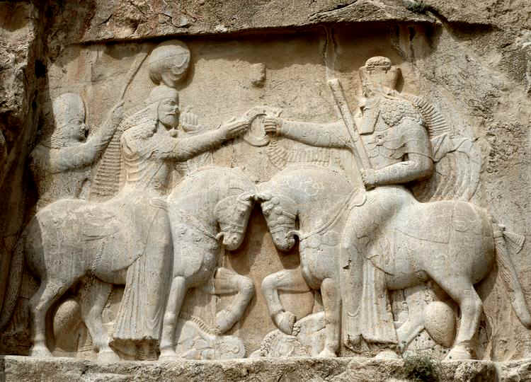
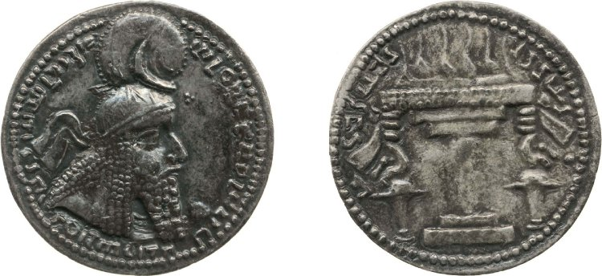
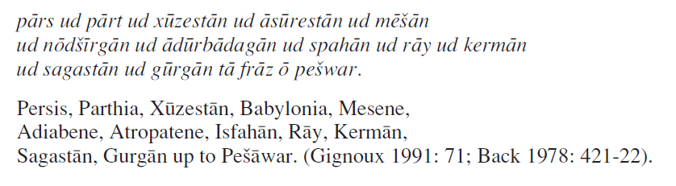
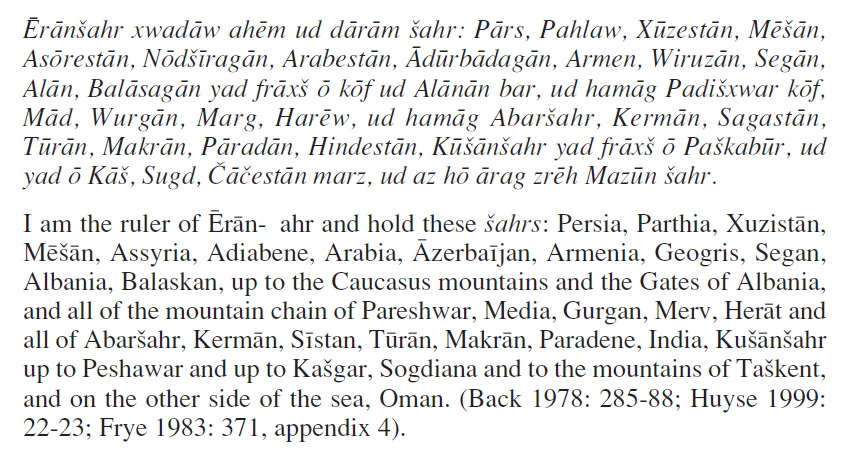
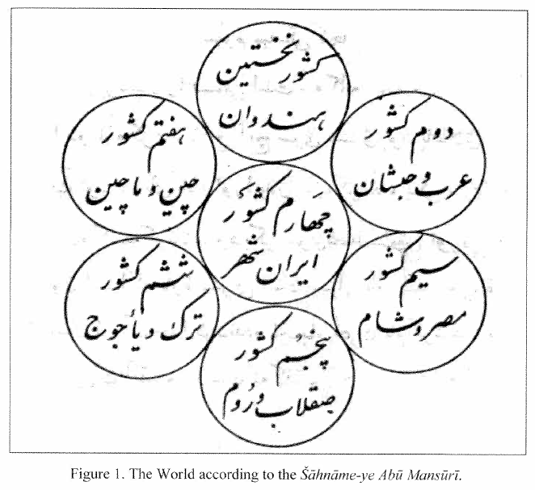
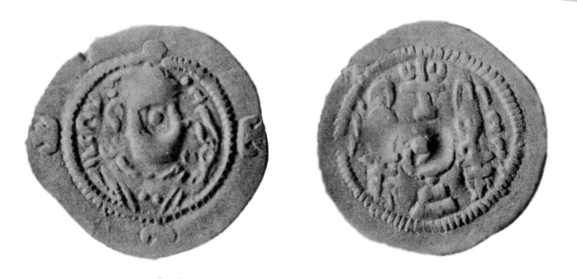
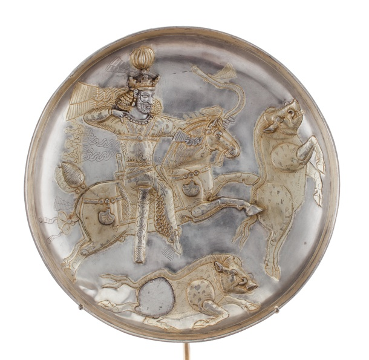
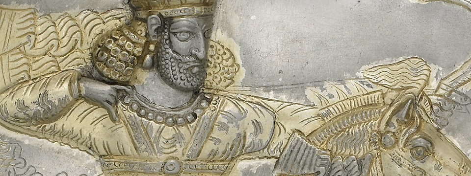
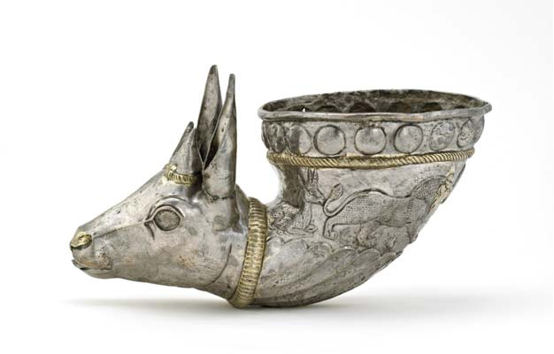

Goal
To introduce pre-Islamic Empires of the Middle East, starting with the Sasanians.
Agenda
- Crowdsource an ID for the Sasanians;
- Write out IDs for Ardashir, Shapur I, Khusraw Parviz, and Anushirwan in small groups;
- Summarize the relationship between power and religion under the Sasanians;
- Discuss the definition of Iran in the Sasanian period.
Vocab
| Sasanians |
shahanshah |
| Eranshahr |
Ardashir |
| Shapur I |
Khosrow (I and II) |
Focus Questions
- What types of sources do we have to talk about the Sasanians?
- How would you characterize the relationship between power and religion?
- Why are the Sasanians important?
- Describe the relationship between the Sasanian and Roman Empires.
Illustrative materials
Maps
Ardashir, r. 224-242
|  |
|  |
| Inscription in Middle Persian (script: Pahlavi): “The Mazda-worshipping Lord Ardashir, King of Kings of the Iranians, whose lineage is of the gods.” |
Shapur I, r. 240-270
Khosrow I Anushirwan, r. 531-79
Khosrow II Parviz, r. 590; 591-628
Inscriptions defining Eran Geographically
|  |
| From Kerdir, a Zoroastrian priest in the 3rd century. |
|  |
| From Shapur I, a Sasanian emperor from 240 – 270 [the son of Ardashir] |
Eranshahr according to the Shahnameh of Abu Mansur
|  |
| The World according to the Šāhnāme-ye Abū Manṣūrī |
Sasanians and Christianity
|  |
| Georgian-Sasanian Coinage |
|  |
|  |
| Shapur (II) Plate, 4th cent. |
|  |
| Drinking vessel, 4th cent. |
Sogdian Wall Painting from Panjikent, 5-8th cent.